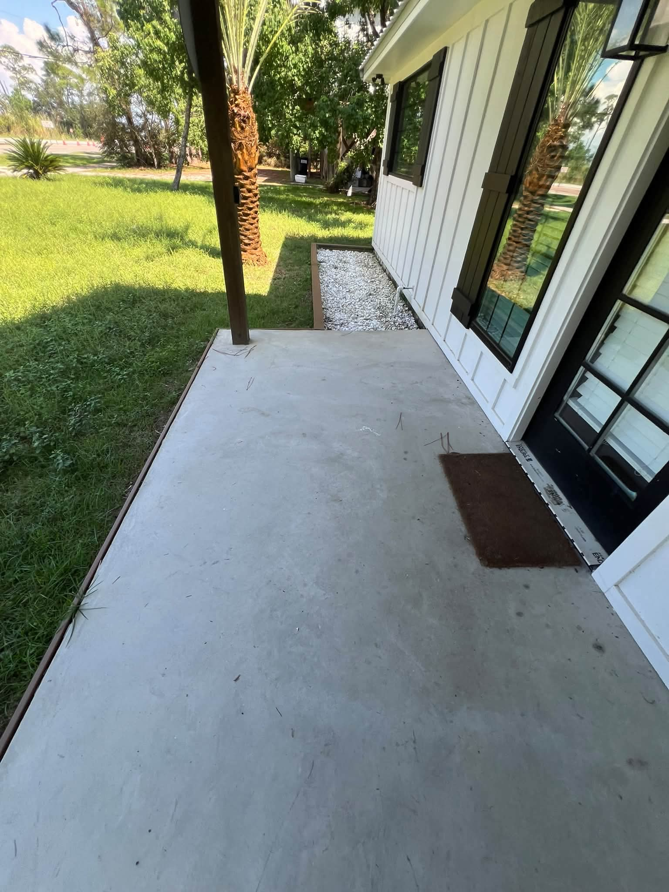

From the blog
Post Construction Cleanup in Mobile, AL: What to Expect
November 9, 2026

A remodel or a new build leaves behind more than a finished room. Fine dust settles on every surface, paint specks show up on floors and glass, and stickers and labels cling to new fixtures. Builders do a rough sweep, but the fine detail work is what makes a space feel ready to live in. Here is what professional post construction cleanup covers for homeowners and builders in West Mobile, Semmes, Theodore, and Saraland.
What post construction cleanup covers
- Dust removal, everywhere. Walls, ceilings, light fixtures, vents, baseboards, and window sills. Construction dust is fine and it gets into every crack, so this takes more than one wipe.
- Floors done right. Hard floors swept, vacuumed, and mopped, with paint and adhesive spots removed. Carpets vacuumed thoroughly to pull up dust and debris.
- Windows and glass. Interior glass cleaned, stickers and labels removed from new windows, and tracks wiped out.
- Kitchens and baths finished. New cabinets wiped inside and out, countertops cleaned, sinks and fixtures polished, and protective film removed.
- Fixtures and details. Light switches, outlet covers, door handles, and hardware wiped clean of dust and fingerprints.
- Debris and trash out. Leftover packaging, scraps, and dust piles removed so the space is clear.
The two pass approach
A good post construction clean usually takes two passes. The first pass is the rough clean: heavy dust removal, debris pickup, and a first wipe of every surface. Then the dust settles again, because it always does. The second pass is the detail clean: a fresh wipe of surfaces, clean floors, polished fixtures, and spotless glass. That second pass is what turns a construction site into a home. If your project is still in progress, schedule the rough clean after the messy trades finish and the detail clean right before move in.
When to schedule it
- After the last trade leaves. Painting, flooring, and trim work should be done before the detail clean starts.
- Before the final walk through. A clean space makes punch list items easy to spot, for you and for your builder.
- Before move in day. Furniture going in over dust just traps it. Clean first, then move in.
- Allow a day of lead time. Dust keeps settling after the first pass, so a gap between the rough clean and the detail clean gets better results.
A note on safety and care
Construction dust is not ordinary household dust. It can irritate lungs and eyes, and it can scratch new surfaces if it is wiped the wrong way. A professional crew uses the right vacuums and cloths for fine dust, and knows which cleaners are safe on new paint, new cabinets, and new floors. Never use a rough pad or a harsh chemical on a brand new surface. When in doubt, ask the builder what finishes were used and pass that along to the cleaning crew.
How pricing works
Post construction cleanup is priced by the size of the space and how much work was done, since a single room remodel and a full new build are very different jobs. Every project gets a custom quote, so you know the number before we start. Call or use the quote form with the square footage, the type of work that was done, and whether you need a rough clean, a detail clean, or both.
Remodel done? We can finish the job.
Kinney Cleaning Services does post construction cleanup across Mobile County. Veteran owned and operated.
Call (251) 767-0754 Get a Custom Quote